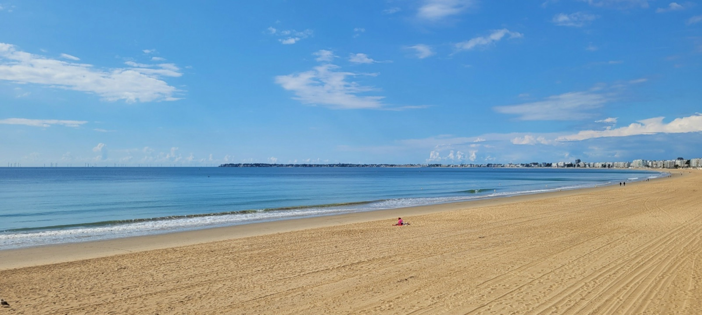
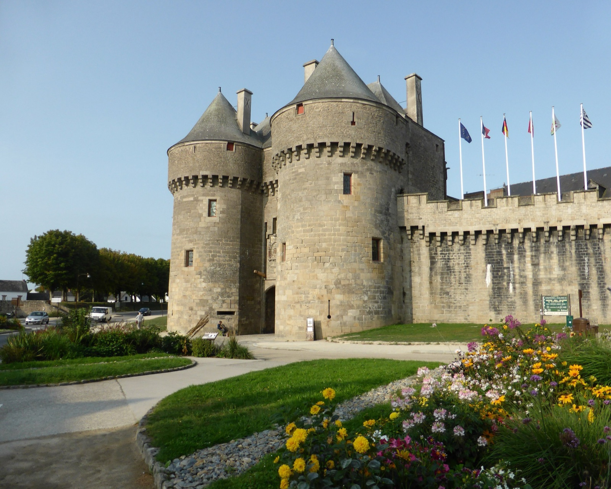
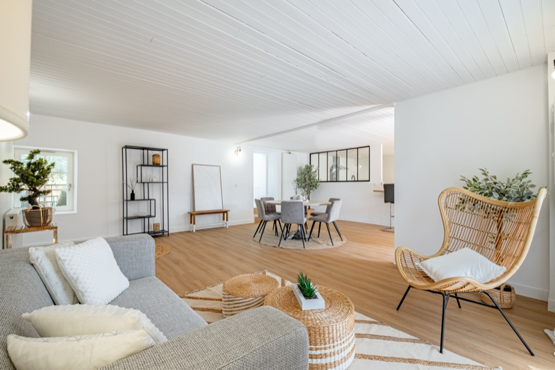
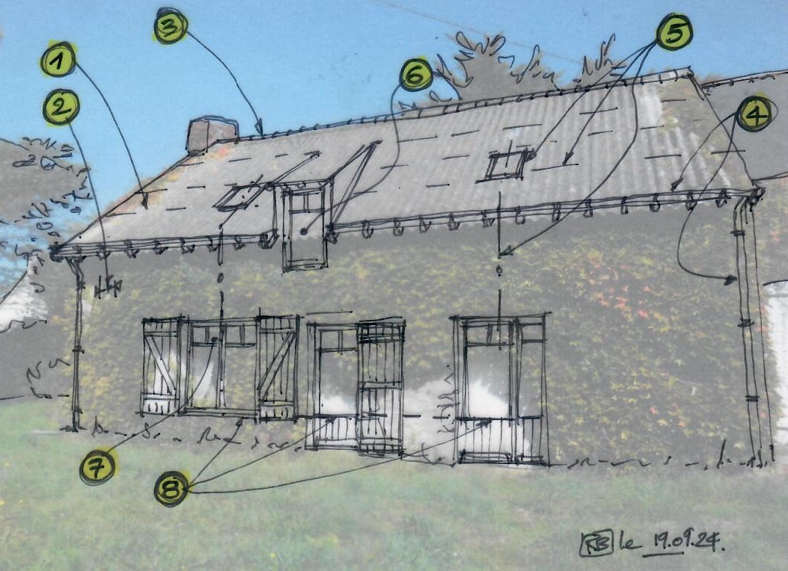

À vendre · hameau de Miroux
Maison en pierre rénovée à Guérande
479 000 €
sans frais d’agence
- 137 m² au sol
- 4 chambres dont 2 de plain-pied
- 1 045 m² de terrain
- DPE A énergie et climat
L’essentiel
Vivre de plain-pied
Séjour, cuisine, véranda, deux chambres et une salle d’eau au rez-de-chaussée.
Intérieur refait en 2025‑2026
Isolation, pompe à chaleur, électricité, menuiseries, assainissement : factures et assurance dommages-ouvrage à l’appui.
1 045 m² de terrain
Une cour au sud, un jardin au nord et à l’est, une dépendance en pierre et un abri de jardin.
Classée A
La meilleure classe du DPE, pour l’énergie comme pour le climat, dans une maison ancienne en pierre.
La Baule à 13 minutes
La plage à 13 minutes en voiture, les remparts de Guérande à 7, au calme d’un hameau.
Le rez-de-chaussée, pour vivre de plain-pied
On entre dans un séjour de 33 m² sous poutres blanches, qui réunit salon et salle à manger. La cuisine neuve, avec plaques à induction et hotte, est éclairée par une fenêtre de toit et s’ouvre sur une véranda tournée vers le jardin. Deux chambres, une salle d’eau et un WC indépendant complètent le niveau : on peut y vivre au quotidien sans prendre l’escalier.
| Séjour | 33,40 m² |
|---|---|
| Cuisine | 15,96 m² |
| Véranda | 7,30 m² |
| Chambre | 11,30 m² |
| Chambre | 10,83 m² |
| Salle d’eau | 3,50 m² |
| WC | 2,23 m² |
| Surface au sol du rez-de-chaussée | 84,52 m² |
L’étage, pour les enfants et les amis
Un palier dessert deux chambres mansardées, dont une grande de 19 m², ainsi qu’une salle d’eau avec WC, éclairée par une grande fenêtre.
| Chambre | 19,46 m² |
|---|---|
| Chambre | 13,12 m² |
| Salle d’eau avec WC | 7,37 m² |
| Palier | 12,75 m² |
| Surface au sol de l’étage | 52,70 m² |
Un terrain de 1 045 m²
La maison est posée sur un terrain de 1 045 m², au calme. Côté rue, au sud : une cour dallée, des places de parking gravillonnées à l’ombre du magnolia et une dépendance en pierre. Derrière la maison, au nord et à l’est : le jardin, avec un abri de jardin au fond. La maison est accolée à sa voisine par le pignon ouest.
| Terrain | 1 045 m² |
|---|---|
| Portail | coulissant, motorisé |
| Piscine | possible |
| Dépendance en pierre | dans la cour, au sud |
| Abri de jardin | au fond du jardin, au nord |
Ce qui a été refait en 2025‑2026
Cette maison en pierre a été rénovée en 2025‑2026 : tout l’intérieur et les équipements ont été refaits. Elle garde ce qui fait son charme et offre le confort d’une maison neuve : isolée, ventilée, chauffée par une pompe à chaleur, avec une électricité, des menuiseries et un assainissement neufs. La fibre optique arrive jusqu’à la maison : on peut y télétravailler sereinement.
Pompe à chaleur air/eauMitsubishi Ecodan : elle chauffe la maison par des radiateurs à robinets thermostatiques et produit l’eau chaude
Double vitrage sur l’ensemble de la maisonmenuiseries PVC neuves (Uw 1,2), portes d’entrée et de service, fenêtres de toit
Murs et plafonds isolés14 à 15 cm d’isolant dans les murs, isolation projetée en plafond, VMC hygroréglable
Électricité entièrement refaiteattestation Consuel, compteur Enedis individuel
Assainissement individuel neufcontrôlé conforme par le SPANC le 04/06/2025
Cuisine neuveplaques à induction et hotte ; salles d’eau, sols et peintures neufs
Fibre optique jusqu’à la maison, 1 Gbit/s et plusde quoi télétravailler
Le budget d'énergie
Une maison ancienne classée A : isolée, ventilée et chauffée par une pompe à chaleur.
- 68,8 kWh/m²/an
- 2,7 kg CO₂/m²/an
Montant estimé des dépenses annuelles d’énergie pour un usage standard : entre 799 € et 1 081 € par an. Prix moyens des énergies indexés au 1er janvier 2021, 2022 et 2023 (abonnements compris).
Diagnostic de performance énergétique n° 2544E2473893P du 28/07/2025, valable jusqu’au 27/07/2035.
Miroux, au nord de Guérande
Le hameau est au nord de la ville. Deux collèges sont à cinq minutes en voiture. De l’arrêt de bus, la ligne 7 rejoint le centre de Guérande en moins de dix minutes ; les cars des collèges et des lycées s’y arrêtent aussi.
| Depuis la maison | En voiture | Distance |
|---|---|---|
| Arrêt de bus « Miroux » (ligne 7) | 200 m à pied | |
| Supermarché et commerces de Villejames | 6 min | 4,4 km |
| Guérande, cité médiévale | 7 min | 3,5 km |
| Gare de La Baule-Escoublac (TGV) | 12 min | 10,3 km |
| Plage de La Baule | 13 min | 11,1 km |
| Saint-Nazaire | 21 min | 22 km |
| Nantes | 1 h 12 | 85 km |

Autour des maisons






Acheter sans agence immobilière, comment ça se passe ?
La visite
Sur rendez-vous : appelez-nous ou écrivez-nous.
L’offre
Vous nous adressez votre proposition par écrit.
La promesse
Rédigée par les notaires et signée par l’acheteur et le vendeur ; les diagnostics et le dossier technique de la maison y sont annexés.
L’acte de vente
Signé chez le notaire : la maison est à vous.
Pas de frais d’agence : le prix affiché est le prix payé, hors frais de notaire.
Qui vend ?
Nous sommes deux amis, Dimitri et Olivier. Nous avons rénové cette maison en 2025‑2026 : nous avons choisi les artisans et suivi les travaux, nous la connaissons sur le bout des doigts.
C’est à nous que vous parlez, de la première visite à la signature chez le notaire. Posez-nous toutes vos questions : ce qu’il y a derrière les cloisons, qui a posé quoi, ce qui est garanti. Nous avons les réponses et les factures.

Olivier de Sauvebœuf
Votre interlocuteur pour les visites et les questions
Vos questions
Quand peut-on emménager ?
La maison est libre d’occupants : la vente peut se faire dès la signature d’une promesse.
Combien coûte l’énergie ?
Selon le DPE, entre 799 € et 1 081 € par an, tous usages. Pompe à chaleur air/eau Mitsubishi, maison isolée.
Qu’y a-t-il dans la cuisine ?
Des plaques à induction et une hotte, neuves. Les autres emplacements sous le plan de travail sont libres, fermés par des rideaux.
Et l’assainissement ?
Individuel, neuf (2025), contrôlé conforme par le SPANC le 04/06/2025.
Et la fibre ?
Oui, jusqu’à la maison : les fourreaux sont posés et la fibre arrive au compteur électrique. Il ne reste qu’à choisir son opérateur, qui pose la prise à l’abonnement. D’après la carte de l’Arcep (juin 2026), cinq opérateurs proposent ici 1 Gbit/s et plus, en réception comme en émission : de quoi télétravailler et enchaîner les visioconférences.
Peut-on créer une piscine ?
Oui. Le plan local d’urbanisme de Guérande admet les piscines sur ce terrain. Un bassin de 10 à 100 m² se déclare en mairie (déclaration préalable de travaux) et 60 % du terrain doivent rester en pleine terre : il reste la place d’un bassin et de ses plages.
Pourquoi vendre sans agence ?
Nous vendons nous-mêmes la maison que nous avons rénovée : pas de frais d’agence, le prix affiché est le prix payé, hors frais de notaire.
La maison est-elle mitoyenne ?
Oui, d’un côté : elle est accolée à sa voisine par le pignon ouest. Le mur qui les sépare est en pierre, épais de 70 cm, avec une double isolation thermique et phonique.
Les autres maisons rénovées
3, 4 ou 5 chambres : parmi nos maisons voisines, il y en a une à votre mesure.

Une grande pièce de vie ?
La maison voisine a une pièce de vie de 63 m² d’un seul tenant, trois chambres et un bureau.


Les trois maisons ensemble ?
Douze chambres sur trois parcelles voisines, à acheter ensemble ou séparément.
Une maison de hameau du XIXᵉ siècle
Sur le plan cadastral de 1819, un ensemble bâti figure déjà à l’emplacement de la maison. La rangée actuelle, en granite et moellon, a été reconstruite entre 1863 et 1874, d’après l’inventaire du patrimoine des Pays de la Loire.
Le plan local d’urbanisme de Guérande la repère comme « bâtiment patrimonial à protéger ». Avant les travaux, en septembre 2024, l’architecte conseil de la Ville, architecte du patrimoine, est venu sur place nous conseiller.


Prix : 479 000 €, sans frais d’agence, frais de notaire en sus.
Plans 2D et 3D : illustrations non contractuelles. Photos : maison meublée pour la mise en vente, juillet 2026 pour la plupart.
Les informations sur les risques auxquels ce bien est exposé sont disponibles sur le site Géorisques : www.georisques.gouv.fr
Histoire de la maison, sources : Plan cadastral de 1819, section A2, parcelles 869 à 872 · Inventaire général du patrimoine culturel, Pays de la Loire, dossier IA44004013 · Plan local d’urbanisme de Guérande, article L.151-19 du Code de l’urbanisme · Avis de l’architecte conseil de la Ville de Guérande, 19/09/2024.
Photos des environs, recadrées : Plage de La Baule : WALTER, Unsplash ; Villa Rose de Mer, La Baule : Harrieta171, Wikimedia Commons, CC BY-SA 4.0 ; Marais salants de Guérande : Jan van der Wolf, Pexels ; Porte Saint-Michel, Guérande : Andrea Corsica, Wikimedia Commons, CC BY-SA 4.0 ; Rue de la Psalette, Guérande : Thanh Ly, Pexels ; Baie de La Baule : Emmanuel Kierzkowski, Wikimedia Commons, CC BY-SA 3.0.


Carte : fond et zones bâties © les contributeurs d’OpenStreetMap ; contour de La Baule-Escoublac : IGN, Admin Express, Licence Ouverte.